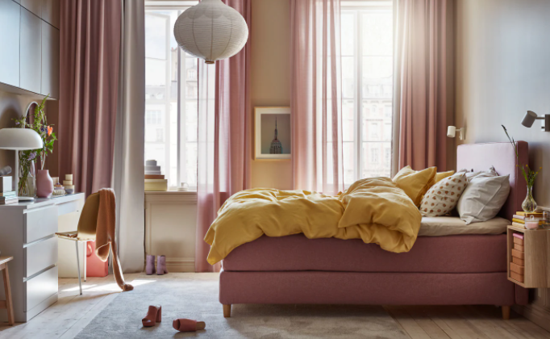

Open a World of Decorating Themes With White Bedroom Furniture
When you like furniture buying, it isn't a casual occasion. Furniture is rather costly and we need it to last a life. White bedroom furniture may be the very best choice because it could add warmth, flexibility and style into your bedroom. Most of the instances, individuals pay attention to the décor in the bedrooms. Having this kind of furniture collection, you can alter just about everything in your bedroom and have a great fit on your own theme.
Is white colour a fantastic selection for you?
The biggest advantage of white coloured furniture is the fact that it reflects light. غرف نوم مودرن 2021 Your bedroom may appear warmer and brighter during the day and are tasteful and bright in the evenings. Besides that, this colour makes your bedroom look much bigger regardless of its size. You'd adore the feeling of liberty and spaciousness!
White colour can also be related to purity, cleanliness and comfort. You'd need to sew to some time coloured bed with sheets. Your bedroom may look more relaxing and more comfortable. Though scrapes, marks and other small harms are more evident about the white bedroom , but it could be handled with minimal bit of upkeep and attention.
Which style is your very best?
This kind of furniture is very popular because ages and you also have a lot of design options to pick from. If you'd like something timeless, you can elect for Victorian fashions. They're solid but enchanting and unite exotic components using classic ones in an ideal way.
Contemporary bedroom furniture is also ideal for those who prefer contemporary way of life. It boasts of clean, slick and simple lines and is founded on the fundamentals of minimalism. You will not have some ornamentation's on these. Their elegance, beauty and coziness comes from a variety of shapes which are mostly motivated by contemporary creations, geometry, and design.

Rustic design bedroom bits in white colour supply incomparable coziness. If you're interested in a space with intimate allure, غرف نوم مودرن 2021 كاملة دمياط you might even pick coastal fashion furniture pieces. This design incorporates natural substances and permits for simplistic beauty and spaciousness.
Some exciting alternatives!
You may try substituting your older furniture, for example comfy armchair with something fresh but equally comfy that matches your own bedroom collection. Try painting your bedroom walls at almost any color or colour. Pastels in addition to vibrant colours work nicely with furniture.
If you're interested in seasonal motifs, white furniture may be a decorating advantage on your bedroom. As white colour will make any room seem bigger, you also get more latitude in choosing things like window coverings and comforters without chance of producing a crowded atmosphere. In summers, a visionary, and light routine in your own bedding will produce a cool and pleasant feeling.
If you adore houseplants, go crazy! With couple of hanging plants in on your dresser in the bedroom and night tables, then you are able to deliver a liveliness at the complete decorating strategy. While dim colored wood furniture may look bit thick, white bedroom furniture may match the greenery. You're able to continue to keep a crystal clear vase with fresh flowers available to increase the décor.
In reality, white bedroom furniture is really a gardener's fantasy come true. By integrating these decorating hints, you are able to produce your bedroom an escape which soothes, calms and stone, all at precisely the exact same time, during this year!